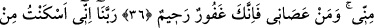
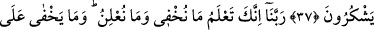
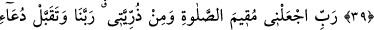
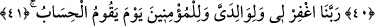

HİÇ BİR ŞEY
ALLAH’A GİZLİ KALMAZ
35. Hatırla ki İbrâhim şöyle demişti: “Rabbim, bu şehri (Mekke’yi) emniyetli kıl,
beni ve oğullarımı putlara tapmaktan uzak tut.”
36. “Rabbim, onlar (putlar) insanlardan birçoğunun sapmasına sebep oldular.
Şimdi kim bana uyarsa o bendendir. Kim de bana karşı gelirse, artık sen gerçekten
çok bağışlayan, pek esirgeyensin.”
37. “Ey Rabbimiz! Ey sâhibimiz! Namazı dosdoğru kılmaları için ben, neslimden
bir kısmını senin Beyt-i Harem’inin (Kâbe’nin) yanında, ziraat yapılmayan bir
vâdiye yerleştirdim. Artık sen de insanlardan bir kısmının gönüllerini onlara
meylettir ve meyvelerden onlara rızık ver! Umulur ki bu nîmetlere şükrederler.”
38. “Ey Rabbimiz! Şüphesiz ki sen bizim gizlediğimizi de açıkladığımızı da
bilirsin. Çünkü ne yerde ne de gökte hiçbir şey Allah’a gizli kalmaz.”
39. “İhtiyar halimde bana İsmail’i ve İshak’ı lütfeden Allah’a hamdolsun!
Şüphesiz Rabbim duâyı işitendir.”
40. “Ey Rabbim, beni ve soyumdan bir kısmını namazı devamlı kılanlardan eyle;
ey Rabbimiz! Duâmı kabûl et!”
41. “Ey Rabbimiz! (Amellerin) hesap olunacağı gün beni, ana-babamı ve
mü’minleri bağışla!”